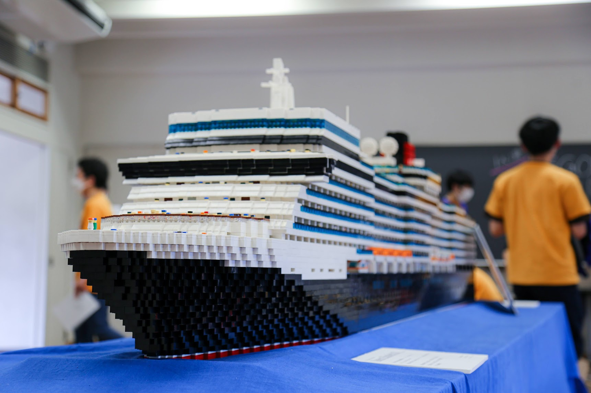
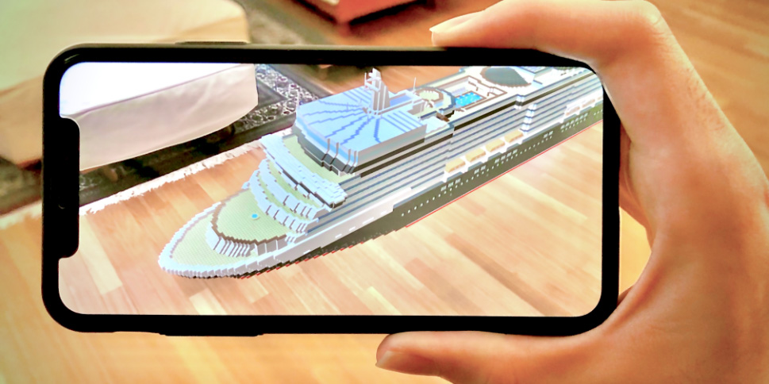

mol
オンライン展示室

僕はmol。
LEGO®作品をつくります。
ここはオンラインの展示室。
いつでもどこでも、作品をご覧いただけます。

本物と同じ大きさで
作品の大きさは何mにもおよびます。写真と動画だけじゃつまらない。どうやったらその大きさを実感してもらえるだろう。
出した答えは AR でした。Augmented Reality。拡張現実。
スマートフォンやタブレットでご覧の方はARのアイコンをタップしてみてください。
あなたの目の前に、そのままの大きさで作品が現れます。